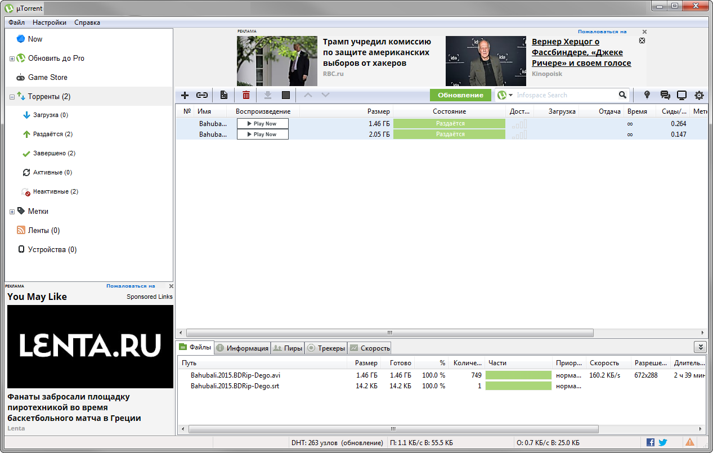

![]()
μTorrent
| μTorrent | |
| Автор | Людвиг Стригеус |
| Разработчик | BitTorrent, Inc. |
| Написан на | С++ |
| Операционная система | Windows, Mac OS X, Android, Linux |
| Поддержка русского языка | Да |
| Сайт | utorrent.com |
μTorrent (также uTorrent и microTorrent, произносится как «мю-торрент» — BitTorrent-клиент для Windows, macOS, Linux (веб-интерфейс) и Android, написанный на C++ и отличающийся небольшим размером и высокой скоростью работы при достаточно большой функциональности. В январе 2011 года количество пользователей в месяц достигло отметки в 100 миллионов (совместно с BitTorrent). В настоящее время, куплен BitTorrent'ом.
Разработка
μTorrent первоначально задумывался как производительный клиент, минимальный как по размеру, так и по возможностям. Разработчик μTorrent Людвиг Стригеус начал писать клиент осенью 2004 года, затем забросил проект примерно на год и возобновил работу в сентябре 2005 года. Первая доступная версия (1.1 бета) появилась 18 сентября 2005 года.
Возможности программы
Покупка компанией «BitTorrent, Inc»
В середине 2006 года Мартин Лорентсон ищет сотрудников для своего нового проекта «Spotify» и через общих знакомых по университету Чалмерса выходит на Людвига и знакомит его Даниэлем Эком. Последний принимает решение выкупить «μTorrent», чтобы Людвиг сосредоточился на «Spotify».
Даниэлю «μTorrent» тоже не нужен и 7 декабря 2006 года «μTorrent» перешёл в собственность компании «BitTorrent, Inc.». В соответствии с соглашением, основную дальнейшую разработку клиента будет осуществлять «BitTorrent, Inc», а Стригеус станет техническим консультантом.
«μTorrent» останется программой с закрытым исходным кодом, BitTorrent, начиная с 6-й версии, основывается на его исходном коде и имеет почти одинаковый с ним интерфейс. Вебсайт и форум «μTorrent» пока останутся без изменений.
Системные требования
Исполняемый файл μTorrent занимает порядка 1 мегабайта на диске, использует минимум оперативной памяти и ресурсов процессора. Программа может работать даже на устаревших компьютерах с процессором уровня Intel 80486 под управлением Windows 95 (версии до 1.8.5 build 17091). Windows 2000 поддерживается в версиях до 3.1.2 build 26773, современные версии требуют Windows XP и выше.